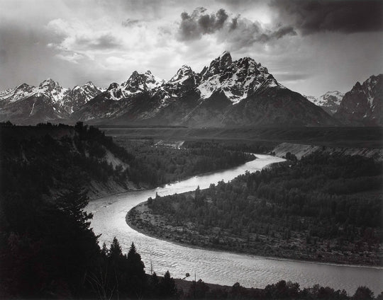
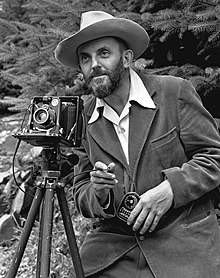
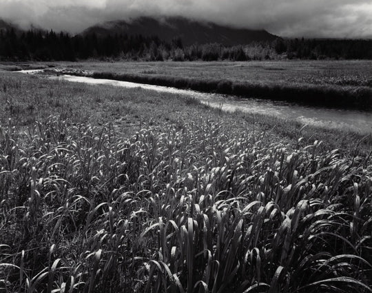
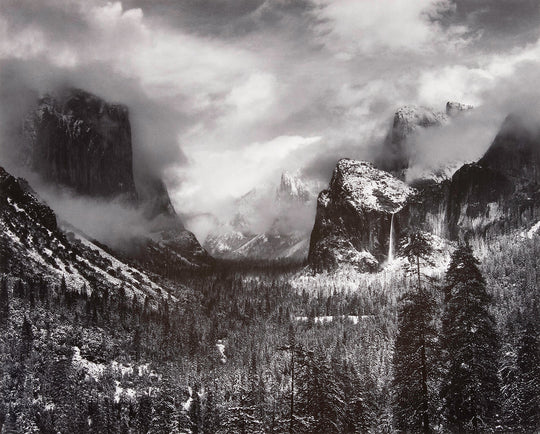

ANSEL ADAMS
Ansel Easton Adams was an American landscape photographer and environmentalist known for his black-and-white images of the American West. Adams was a life-long advocate for environmental conservation, and his photographic practice was deeply entwined with this advocacy. He was also a key advisor in the founding and establishment of the photography department at the Museum of Modern Art in New York, an important landmark in securing photography's institutional legitimacy.

FEATURED WORKS

Rain, Beartrack Cove, Glacier Bay Nat'l Monument
